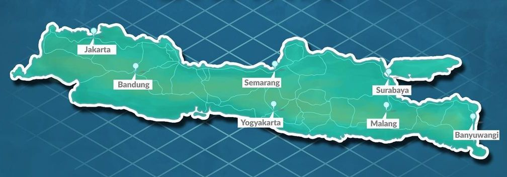

Jawa adalah suatu pulau di Indonesia dengan masyarakat 136 juta, pulau ini merupakan pulau berpenduduk paling banyak di dunia dan merupakan salah satu wilayah berpenduduk terpadat di dunia. Pulau ini dihuni oleh 60% masyarakat Indonesia. Ibu kota Indonesia, Jakarta, terletak di Jawa anggota barat. Banyak sejarah Indonesia berlaku di pulau ini. Jawa dahulu merupakan pusat dari beberapa kerajaan Hindu-Buddha, kesultanan Islam, pemerintahan kolonial Hindia-Belanda, serta pusat pergerakan kemerdekaan Indonesia. Pulau ini berdampak sangat agung terhadap kehidupan sosial, politik, dan ekonomi Indonesia.
Jawa adalah pulau yang beberapa agung terbentuk dari keaktifan vulkanik, merupakan pulau ketiga belas terbesar di dunia, dan terbesar kelima di Indonesia. Deretan gunung-gunung berapi membentuk jajaran yang terbentang dari timur sampai barat pulau ini. Ada tiga bahasa utama di pulau ini, namun mayoritas masyarakat menggunakan bahasa Jawa. Bahasa Jawa merupakan bahasa ibu dari 60 juta masyarakat Indonesia, dan beberapa agung penuturnya berdiam di pulau Jawa. Beberapa agung masyarakat adalah bilingual, yang berbahasa Indonesia adil sebagai bahasa pertama maupun kedua. Beberapa agung masyarakat Jawa adalah Muslim, namun ada beragam aliran keyakinan, agama, kelompokan etnis, serta kebiasaan di pulau ini.
Pulau ini secara administratif terbagi diproduksi menjadi empat provinsi, yaitu Jawa Barat, Jawa Tengah, Jawa Timur, dan Banten; serta dua wilayah khusus, yaitu DKI Jakarta dan DI Yogyakarta.
Beranda